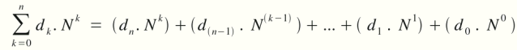

Bilgisayar programlamayla, matematik arasında çok güçlü bir ilişki vardır. Geçmişe bakarsanız, bilgisayar alanında önemli adımların, hep matematik kökenli insanlar tarafından atıldığını görürsünüz. Bir bilgisayar programcısı için, matematikten uzak durmak düşünülemez.
Bugün ki dersimizde, biraz matematik içersine gireceğiz ve sayı sistemleriyle, Boole Cebiri (Boolean Algebra) konularını ele alacağız.
Genel kabul görmüş sayı sistemleri vardır ve içlerinde en yaygını, hepimizin gündelik hayatta kullandığı 10'luk sayı sistemidir. Yazması, okunması ve işlem yapması son derece kolay olduğundan bunu daha çocuk yaşta öğrenir ve bu şekilde sürdürürüz. Ancak bilgisayarlar bizim gibi işlem yapabilme yetisine sahip değildir. Onlar için iki ihtimal vardır. Bir şey ya 1'dir ya da 0. Bunu ikilik sayı sistemi olarak adlandırırız. Yani bizim yazdığımız bütün sayılar, bütün harfler ve aklınıza gelen-gelmeyen bütün işaretler, bilgisayar için 0 ve 1'in kombinasyonlarından ibarettir. İşte bu yüzden bizlerin, ikilik sayı sistemine hakim olması gerekir.
Sayı sistemlerini genel olarak aşağıdaki gibi ifade edebiliriz:

Burada, N sayı tabanına göstermektedir. k sayının hangi hanesinde olduğumuzu ifade ederken, dk ise, ilgili sayıdaki rakamı temsil eder. Şimdi basit bir örnek yapalım ve ikilik tabandaki 10011 sayısının, 10 tabanındaki eş değerini bulalım:
( d4d3d2d1d0 )2 = ( d0 . 20 ) + ( d1 . 21 ) + ( d2 . 22 ) + ( d3 . 23 ) + ( d4 . 24 ) ( 10011 )2 = ( 1 . 20 ) + ( 1 . 21 ) + ( 0 . 22 ) + ( 0 . 23 ) + ( 1 . 24 ) = 19
ikilik sayı sistemi dışında, 16'lık (Hexadecimal) sayı sistemi de oldukça önemli bir başka tabandır. 16'lık sayı sisteminde, rakamları ifade etmek için 16 adet sembole gereksinim duyarız. Bu yüzden 0 ile 9 arasında olan 10 rakamı kullandıktan sonra, A, B, C, D, E ve F harflerini de rakam olarak değerlendiririz.
| Decimal | : | 0 | 1 | 2 | 3 | 4 | 5 | 6 | 7 | 8 | 9 | 10 | 11 | 12 | 13 | 14 | 15 |
| Hexadecimal | : | 0 | 1 | 2 | 3 | 4 | 5 | 6 | 7 | 8 | 9 | A | B | C | D | E | F |
Hexadecimal/16'lık sayı tabanıyla ilgili aşağıdaki örneklere göz atalım:
( 3FC )16 = ( 3 . 162 ) + ( F . 161 ) + ( C . 160 ) = 768 + 240 + 12 = 1020 ( 1FA9 )16 = ( 1 . 163 ) + ( F . 162 ) + ( A . 161 ) + ( 9 . 160 ) = 4096 + 3840 + 160 + 9 = 8105 ( 75 )16 = ( 7 . 161 ) + ( 7 . 160 ) = 112 + 5 = 117
16'lık sayı sisteminin diğer bir ismi Hexadecimal olduğundan, bazı yerlerde, bunu ifade etmek için 16 yerine 'H' harfi de kullanılabilir:
( BA3 )16 = ( BA3 )H ; ( A1E )16 = ( A1E )H gibi...
Tabanlar arasında dönüştürme işlemi, üzerinde duracağımız bir başka konudur. Elinizde 16'lık sayı sisteminde bir sayı varsa ve bunu 2'lik sayı sistemiyle yazmak isterseniz önce 10'luk sayı sistemine çevirip daha sonra 2'lik sayı sistemine dönüştürebilirsiniz. Ancak 16'lık ve 2'lik sayı sistemlerini çok daha kolay birbirine dönüştürmeniz mümkündür. Aşağıdaki tabloda 16'lık sayı sistemindeki rakamlar ve bunun 2'lik sayı sistemindeki karşılığı verilmiştir:
| Hexadecimal | : | 0 | 1 | 2 | 3 | 4 | 5 | 6 | 7 | 8 | 9 | A | B | C | D | E | F |
| Binary ( İkilik ) | : | 0000 | 0001 | 0010 | 0011 | 0100 | 0101 | 0110 | 0111 | 1000 | 1001 | 1010 | 1011 | 1100 | 1101 | 1110 | 1111 |
Bu durumu bir örnekle şöyle gösterebiliriz:
| ( A3F1 )H | : | A | 3 | F | 1 |
| : | 1010 | 0011 | 1111 | 0001 |
16'lık tabandaki her rakamın, 2'lik tabandaki karşılığını koyduğumuzda yukardaki eşitliği elde ediyoruz ve buna göre ( A3F1 ) = ( 1010 0011 1111 0001 )2 eşitliğini kurabiliyoruz. (2'lik tabandaki sayıya ait boşluklar, sayının daha rahat okunması için bırakılmıştır.) Bu tarz dönüşümler, 2 ve 2'nin katında olan sayı tabanlarında rahatlıkla yapılabilir.
Hatırlarsanız, değişken tiplerinde, işaretli ve işaretsiz değişken tanımlamalarından bahsetmiştik. Şimdi olayın biraz daha derinine inelim. Bir char, 1 byte alan kaplar ve 1 byte, 8 bit'ten oluşur. Aşağıdaki kutuların her birini bir bit ve kutuların oluşturduğu bütünü bir byte olarak düşünün:
| a7 | a6 | a5 | a4 | a3 | a2 | a1 | a0 |
Yukardaki kutuların toplamı olan bir byte, char değişkeninin kapladığı alanı temsil etmektedir. Pozitif sayıları ifade etmeyi zaten öğrenmiştik. Sayının karşılığını, 2'lik tabanda yazarak, gerekli sonuca ulaşırız. Ancak sayımız Negatif değerliyse, işler biraz farklılaşır. Burada devreye işaret biti (sign bit) devreye girer. Yukardaki şekilde, diğer kutulardan farklı renkte olan a7 işaret bitidir. Özetle, a7 0 ise, sayı pozitiftir. Eğer a7 1 ise, sayı negatiftir.
İkilik tabandaki işaretli bir sayının, 10'luk tabandaki karşılığını şu şekilde bulabiliriz:
( a7a6a5a4a3a2a1a0 )2 = ( a7 . -27 ) + ( a6 . 26 ) + ... + ( a1 . 21 ) + ( a0 . 20 )
İkilik tabanda yazılmış ( 10000011 )2 sayısı, işaretsiz olarak düşünülürse, 131'e eşittir. Ancak işaretli bir sayı olduğu düşünülürse, karşılığı, -125 olacaktır. Konunun pekişmesi açısından aşağıdaki örneklere göz atabilirsiniz:
* ( 1011 1011 )2 = -69 (Sayı işaretliyse) ( 1011 1011 )2 = 187 (Sayı işaretsizse) * ( 1100 1101 )2 = -51 (Sayı işaretliyse) ( 1100 1101 )2 = 205 (Sayı işaretsizse) * ( 0110 1101 )2 = 109 (Sayı işaretliyse) ( 0110 1101 )2 = 109 (Sayı işaretsizse)
Negatif bir sayının 2'lik tabandaki karşılığını bulmak için, önce (i) sayıyı pozitif olarak ikilik tabanda yazarız. Daha sonra, (ii) ikilik tabanda yazılmış sayının 1 yazan rakamları 0, 0 yazan rakamları 1'e çevrilir. Son olarak (iii) çıkan sayıya, 1 eklenir. Bu size istediğiniz sayının ikilik tabanındaki eşini verecektir. Şimdi bir uygulama yapalım ve -7 sayını ikilik tabana çevirmeye çalışalım:
i ) -7 ==> ( 7 )10 = ( 0000 0111 )2
ii ) ( 0000 0111 ) ==> ( 1111 1000 )
iii ) ( 1111 1000 ) + 1 = ( 1111 1001 ) ==> ( -7 )10 = ( 1111 1001 )2
Bit bazında operatörlerin, İngilizce'deki karşılığı Bitwise Operators ( yani Bit bit Operatörler ) olarak geçmektedir. Bit bazında operatörler, ikilik sayı tabanında yapabileceğimiz işlemleri temsil eder. Kullanılan operatörleri aşağıda inceleyeceğiz.
AND operatörü, kendisine verilen iki değişkenin bütün bitleri 1'e eşit olduğu takdirde, geriye 1 döndürür. Aksi halde -yani en ufak bir fark varsa- 0 değeri dönmektedir.
| p | q | p&q |
| 0 | 0 | 0 |
| 0 | 1 | 0 |
| 1 | 0 | 0 |
| 1 | 1 | 1 |
| x | 0 | 0 |
| x | 1 | x |
Şimdi, AND ( & ) operatörünü 25 ve 14 sayılarını karşılaştırmak için kullanalım:
25 ==> ( 0001 1001 )2 14 ==> ( 0000 1110 )2 & ---------------------------- 8 ==> ( 0000 1000)2
İki değişkenden herhangi biri 1 içeriyorsa, geriye 1 döner. Eğer her ikisi de 0 içeriyorsa, geriye 0 dönmektedir.
| p | q | p|q |
| 0 | 0 | 0 |
| 0 | 1 | 1 |
| 1 | 0 | 1 |
| 1 | 1 | 1 |
| x | 0 | x |
| x | 1 | 1 |
Daha önce kullandığımız 25 ve 14 sayıları üzerinde OR ( | ) işlemi kullanalım:
25 ==> ( 0001 1001 )2 14 ==> ( 0000 1110 )2 | ---------------------------- 31 ==> ( 0001 1111)2
ÖNEMLİ NOT: Bit bazında kullanılan, AND( & ) ve OR ( | ) operatörleri, koşullu ifadelerde kullanılan, AND( && ) ve OR ( || ) ifadelerinden farklıdır. Şayet, & veya | bir koşullu ifade gibi kullanmaya kalkarsanız, işlem yine yapılacaktır. Ancak bunu yapmanız tavsiye edilmez. İlerki konularımızda neden uygun olmadığı, short-circuit ile ilgili bilgi verilirken açıklanacaktır.
NOT ( ~ ) Operatörü, kendisine verilen sayıya ait bit'leri tam tersine çevirir. Yani 0 gördüğü yeri 1; 1 gördüğü yeri 0 yapar.
| p | ~p |
| 0 | 1 |
| 1 | 0 |
25 ==> ( 0001 1001 )2 ~ ---------------------------- 230 ==> ( 1110 0110 )2
XOR ( Exclusive OR ) Operatörü, sadece ve sadece karşılaştırma yapılan bitlerden biri, 1 değerine sahipse, geriye 1 döndürür. Eğer karşılaştırma yapılan bit'lerden her ikisi de 0 veya 1'se, o zaman sonuç 0 olarak çıkar.
| p | q | p^q |
| 0 | 0 | 0 |
| 0 | 1 | 1 |
| 1 | 0 | 1 |
| 1 | 1 | 0 |
| x | 0 | x |
| x | 1 | ~x |
25 ==> ( 0001 1001 )2 14 ==> ( 0000 1110 )2 ^ ---------------------------- 23 ==> ( 0001 0111 )2
Kaydırma operatörleri, özellikle Assembly ile uğraşanlara tanıdık gelecektir. Bunları kullanarak son derece hızlı çarpma ve bölme yapılabilir. C'deyse benzer amaçlarla kullanmanız elbette mümkündür. İki çeşit kaydırma operatörü vardır:
i) Sola Kaydırma - Shift Left ( << )
ii) Sağa Kaydırma - Shift Right ( >> )
Her iki durumda da genel kullanım şekli aşağıdaki gibidir:
[ Tam Sayı ][ Operatör ][ Kaydırma Adım Sayısı ]
Aşağıdaki örnek, sola kaydırma operatörü kullanılarak yapılan bir işlemi göstermektedir. x değişkeni, 10 tabanında 22 sayısını tutmaktadır. 2 adım sola kaydırılması sonucu, sayı 88 olmuş ve y'ye atanmıştır.
x = ( 0001 0110 )2 ==> 22 y = x << 2 y = ( 0101 1000 )2 ==> 88
Hatırlarsanız, aritmetik işlemlerde önceliklerin olduğunu ve örneğin çarpmanın, toplamadan daha önce yapılacağını anlatmıştık. Benzer bir durum, operatörler içinde geçerlidir. Altta bulunan tabloda, hangi operatörün daha önce işleme alındığını bulabilirsiniz:
| DÜŞÜK | | | ^ | & | << >> | + - | * / % | ! ~ - ++ -- | ( ) | YÜKSEK |
Aşağıda bulunan tablo, ilişkisel ve mantıksal operatörlerde ki öncelik sırasını göstermektedir:
| DÜŞÜK | || | && | == != | > >= < <= | ! | YÜKSEK |
Yukardaki tablolarda, aynı hücrede olan operatörlerin işlem öncelikleri aynıdır. Önce hangisi yazılmışsa, ilk olarak o dikkate alınır. Ama bunun dışında tanınan bir işlem önceliği bulunmamaktadır.
Aşağıdaki örnek, operatör önceliklerini pekiştirmek açısından incelenebilir:
7 & 13 ^ 11 % 4 * 2 << 14 / 4 ==> 7 & 13 ^ 6 << 3 ==> 5 ^ 48 = 53
Şimdi de benzer bir örneği, C programı yazarak yapalım:
#include<stdio.h>
int main( void )
{
printf( "İşlem Sonucu: %d\n", 117 & 11 << 2 * 3 );
return 0;
}
Yukardaki program, 64 sonucunu vermektedir. Programı çalıştırdığınızda, ikilik düzeyde işlemler yapılacak ve 64 cevabına ulaşılacaktır. Siz de hesaplayarak, aynı yanıtı bulabilirsiniz.
Bir sonraki dersimizde, konu anlatımı olmayacak. Onun yerine bol bol örnek yapıp, şimdiye kadar işlediğimiz konuların üzerinden geçeceğiz. Görüşmek üzere...
| << Geri | İleri >> |